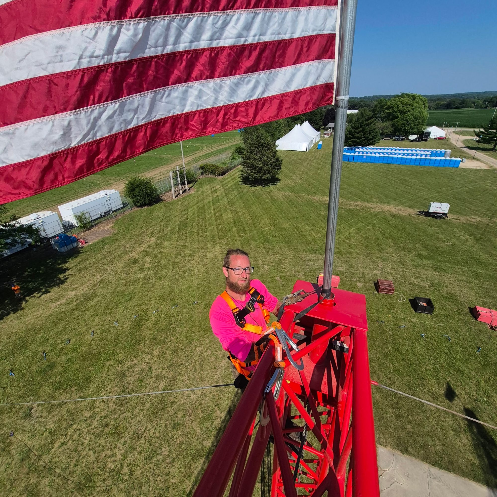
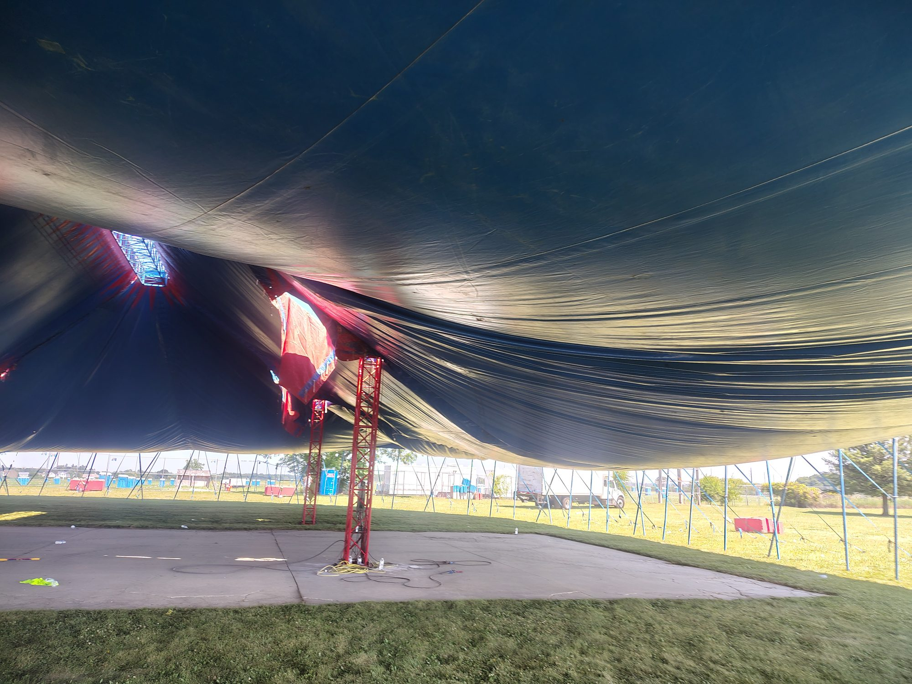

Work
on deck.
A working record of arena calls, festival builds, touring systems, structural support, video deployment, and spotlight operations. The emphasis is the work itself: where it happened, what the production environment looked like, and the role Deadhang Labor supported.
 Lost Lands / Thornville, Ohio
Lost Lands / Thornville, Ohio
Electric Forest
Labor support across large-scale festival environments, including performance-area preparation, scenic installation, and video-wall deployment. These photographs document the production footprint rather than imply ownership of the designs or systems shown.


Lost Lands
Main-stage field work inside an active build environment. The image documents the scale of the scenic facade, lifts, structure, and production activity surrounding the call.

Big rooms.
Small margins.
Arena and stadium calls demand clean handoffs, awareness of multiple departments working at once, and respect for the production lead. The work shown here spans staging, lighting, LED/video, equipment movement, barricade, and general load-in support.


Spotlight operations
Spotlight work performed as trained, assigned, and authorized: system preparation, cue execution, performer tracking, framing, and communication with the lighting team from elevated positions.


Country Thunder
A multi-day festival environment documented from setup through active performance. The sequence emphasizes continuity: build conditions, production infrastructure, live operations, and crew coordination.




The road package
Selected touring-production documentation showing moving video systems, scenic set pieces, and arena-floor preparation. These credits document labor/support participation and do not imply affiliation with the artists or ownership of the touring designs.


More of the work.
 NAU Skydome
NAU Skydome Lighting / Arena
Lighting / Arena Show day
Show day Corporate production
Corporate production Breakaway Mesa
Breakaway Mesa Stage build
Stage build Country Thunder
Country Thunder Night Trip
Night Trip Innings Festival
Innings Festival San Jose / Event load-in
San Jose / Event load-in Tempe Town Lake
Tempe Town Lake Show call
Show callPortfolio boundary. Event, artist, tour, venue, festival, and organization names and marks remain the property of their respective owners. They are referenced only to identify work environments and production credits. Deadhang Labor LLC provided independent labor/support and is not represented as the producer, designer, owner, sponsor, or endorser of the productions shown.